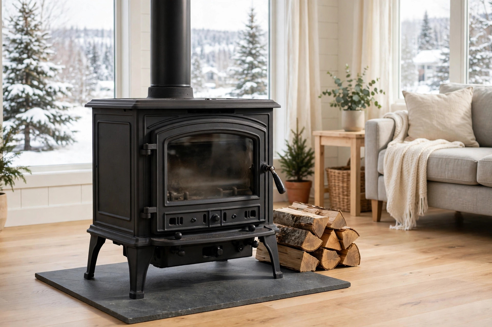

Wood stoves and home insurance: disclosure, certification, and the WETT inspection

General information only. This guide explains, in general terms, how Canadian home insurers treat wood stoves and other solid-fuel heating appliances. It is not insurance advice, it does not recommend any insurer or product, and it is not written by a broker or agent. Insurers set their own rules for wood-burning appliances, and those rules differ — confirm anything that matters with your own insurer or broker, and treat your policy documents as the final word.
A wood stove changes the risk the policy was priced on
A standard home policy is priced on the home as the insurer understood it when the policy was written. A wood stove changes that picture in a specific way: it puts an open flame, a hot flue, and a chimney system inside the risk. Sonnet, a Canadian insurer, puts the baseline plainly: most Canadian insurance providers do cover wood-burning stoves, but they may be more cautious about insuring a home that has one — especially if the stove is the main source of heat — and the homeowner has to meet the insurer's conditions for coverage, which vary from insurer to insurer. There is no separate "wood stove policy" to buy: as BrokerLink notes, there is no standalone wood stove insurance product, and Morison Insurance describes the Ontario pattern the same way — coverage for a stove is an addition to a home insurance policy, not a policy of its own. That structure is why the stove question is really three questions, and this guide takes them in order: did you tell the insurer, is the appliance itself certified, and has the installation been inspected?
The price effect is real but not a fixed number. Sonnet notes that a wood stove generally raises the premium because open flame increases the chance of an expensive fire claim, that some insurers charge a percentage and others a flat fee, and that the type of stove and whether it is the primary or secondary heat source can both factor into the price. Any specific dollar figure for "the wood stove surcharge" would be invented — insurers rate this individually, and the honest version of the answer is the list of factors in the primary-heat section below.
Gate one: disclose it — a stove is a material change
The first gate is the one most often missed, because nothing about it is visible on the stove itself. Sonnet explains the contract logic directly: adding a wood stove is a significant change to the home, the insurance contract requires the policyholder to promptly disclose major changes, and if an undisclosed stove causes a house fire, the insurer could deny the claim — leaving the homeowner paying out of pocket for what could be very costly damage. The same duty runs the other way at purchase time: someone applying for a new policy on a home that already has a stove must disclose the stove on the application, or risk a denied claim and major financial loss. Disclosure is not a courtesy or a formality; it is the step that keeps the rest of the policy — including coverage that has nothing to do with the stove — on solid ground. A stove the insurer knows about is a rated risk. A stove the insurer does not know about is a contract problem waiting for a claim to expose it.
Gate two: the appliance itself must be certified
The second gate is about the stove as a manufactured product, separate from how it was installed. Morison Insurance lists the Ontario requirements as a set: a surcharge applies, a WETT inspection is required, a questionnaire covering the stove type, the chimney, the installation, and the precautions the household takes is required — and the appliance must be certified by one of the recognised testing bodies: ULC (Underwriters' Laboratories of Canada), WH (Warnock Hersey), or ACNOR/CSA (the Canadian Standards Association). The certification label is the insurer's evidence that the appliance was built and tested to a standard; it is normally found on a plate on the appliance itself. This gate is where older stoves run into trouble. Westland Insurance notes that older and rural properties are the ones that tend to hit problems — the fire risk is higher, and a stove installed many years ago may simply not meet the clearance and installation standards insurers expect today, even if it was installed in good faith by a previous owner. Sonnet makes the insurer's-side version of the same point: insurers set their own rules, some will not insure homes with very old models, and a homeowner may need to repair or upgrade the stove before coverage is available. Certification, in other words, is not a one-time historical fact about the stove — it is judged against what insurers expect now.
Gate three: the WETT inspection — and the certificate that does not exist
The third gate is the inspection of the installed system — stove, flue, chimney, and clearances together. Sonnet notes that many Canadian insurers require the stove to pass a WETT inspection before they will agree to insure the home, and that these inspections matter most when someone is moving into a property that already has a stove: some existing installations are do-it-yourself jobs by a previous owner, often not up to code and genuinely unsafe. WETT is Wood Energy Technology Transfer Inc. — BrokerLink, quoting WETT Inc. itself, describes it as a non-profit training and education association that acts as the national registrar of the WETT program and promotes the safe and effective use of wood-burning systems in Canada through professional training and public education.
Two corrections belong here, because both are widespread misconceptions. First: there is no such thing as a "WETT certificate." WETT Inc.'s own position, as BrokerLink reports it, is that what is issued is an inspection report written by a professional who is WETT certified — the certification belongs to the person, not to the stove. A homeowner who believes their stove "has its WETT certificate" from a previous owner's sale documents may in fact have nothing an insurer will accept. Second: there is no law requiring WETT certification to perform an inspection. BrokerLink notes there are no legal requirements in Canada for an inspector to be WETT certified — but many insurers insist that the inspection, installation, and maintenance of wood-burning appliances be performed by someone who is, which makes the certified route the practical requirement whatever the law says. What the inspection itself covers, per Sonnet: whether the stove meets building codes, whether it was properly installed, whether it is working properly and not releasing harmful pollutants into the home, and — with a look at the roof — whether the chimney has structural or ventilation problems.
One more limit is worth stating before the levels table: a passed inspection is evidence, not a guarantee. Westland states it directly — a WETT inspection does not necessarily guarantee insurance. It shows the stove was properly installed and meets safety standards, but each insurer has its own underwriting guidelines for wood stoves, some may still decline even with a valid inspection report, and two homes with identical, freshly inspected stoves can receive two different answers from two different insurers. The inspection clears the safety question; the insurer still decides the business question.
The three WETT inspection levels
Not every inspection is the same depth of look. Morison's breakdown of the three levels insurers may request:
| Level | What the inspector does | When it typically comes up |
|---|---|---|
| Level 1 — Visual | Inspects the visible components of the appliance and venting system: measures clearances, opens doors and dampers, views the outdoor chimney from the ground, checks that floor protection is in place | The usual starting point for insurance purposes on an accessible, unremarkable system |
| Level 2 — Technical | Everything in Level 1, plus steps such as disconnecting flue pipes and opening clean-outs to check for ventilation problems; may require entering the attic or crawlspace and accessing the roof | When a visual inspection shows signs something is not right, or when the insurer requires it from the start |
| Level 3 — Invasive | Opens up concealed parts of the system; may involve invasive work such as cutting into drywall to reach stove components | Usually only after a concerning event such as a chimney fire, or for a very old stove that has gone unused for a long period |
The report that comes out of any level rates each section, per Morison, as Not Applicable, Compliant, Not Compliant, or Unable to Inspect — and the insurer then decides, based on the report, whether to issue coverage, deny it, or request another level of inspection. "Unable to Inspect" is the entry to watch: it is not a pass, and on a concealed flue or an inaccessible chimney it can be the reason an insurer asks for the next level up.
The primary-heat question: how insurers rate the stove's job
Separate from the three gates is a rating question that runs through all of them: what job does the stove do in this house? A stove lit on winter weekends is a different exposure from a stove the household depends on. Morison puts it in risk terms: when the main source of heat comes from burning solid fuel such as wood or pellets, the risk level is higher than when solid fuel is used occasionally as a secondary source or for recreation — coverage is still possible, but the premium will increase and a different policy may be necessary. Sonnet confirms the same distinction from the pricing side: whether the stove is the primary or secondary source of heat is one of the things an insurer may factor into the premium, and insurers are at their most cautious when the stove is the main heat source. The surcharge factors Morison lists show what an insurer is actually weighing: the stove's location in the home, its condition, its age, whether the residence is permanent or seasonal, and whether a licensed contractor installed it. Two contrasts sharpen the picture. Pellet stoves are not an escape hatch: Sonnet notes they are still a fire risk, a premium will more than likely increase for one, and there is little cost difference between insuring the two. And a gas fireplace is at the opposite end of the scale — Morison notes it carries no additional surcharge and no specific requirements, treated as low risk like other gas appliances, though the broker should still be told about a new installation. Location matters as well as fuel: Sonnet warns that a wood stove in a garage is something insurers often will not cover at all, because garages typically hold exactly what open flame should stay away from — oil, grease, fuel cans, propane, and solvents.
A decision framework: three owner situations, three different first moves
The gates above land differently depending on how the stove arrived. Three situations cover most households:
- Installing a new stove. The first move happens before the purchase: tell the insurer or broker what is planned. Morison notes an insurer may require installation by a WETT-certified contractor — who then issues a WETT report following the installation, saving a separate step — and Sonnet's advice is to hire a licensed contractor rather than installing it as a do-it-yourself project. Choose an appliance carrying a ULC, WH, or CSA certification label, because an uncertified appliance can fail gate two no matter how well it is installed.
- Buying a home that already has a stove. The first move is disclosure on the application — Sonnet is explicit that the stove must be disclosed when applying, not discovered later. The second move is the inspection: this is the situation Sonnet flags as where WETT inspections matter most, because a previous owner's installation may be a well-meant job that is not up to code. Ask what documentation exists, and remember the correction from gate three — a "WETT certificate" in the sale papers is not a thing; an inspection report by a WETT-certified professional is.
- Heating a cottage or seasonal home with wood. The first move is to describe the arrangement exactly — permanent versus seasonal residence is itself one of the rating factors Morison lists, and a stove that is the main heat source in a part-time home combines the two features insurers are most cautious about. The conversation to have is the primary-heat one: what the insurer requires when solid fuel is the main heat in a home that also sits empty for stretches.
In all three situations the sequence is the same — disclose, certify, inspect, then discuss how the stove's job is rated — but the situation decides which step is urgent. For a new install it is the installer choice; for a purchase it is the application disclosure; for a cottage it is the primary-heat conversation.
Ongoing duties once the stove is accepted
Acceptance is not the end of the paperwork. Morison notes that in some cases an annual inspection may be required to maintain coverage, and Sonnet advises having the stove inspected every 12 months and maintaining it properly throughout the year. The questionnaire insurers use asks about precautions and maintenance — Morison's description includes regular maintenance and chimney cleaning to remove soot buildup — so the honest answer to "what does the insurer expect now?" is a rhythm, not an event: the system stays in the condition the report described. An insurer may also ask for maintenance receipts to prove regular cleanings and inspections; Sonnet raises exactly that as a question worth asking when the stove is first disclosed, so the household knows what records to keep before the first renewal rather than after the first claim.
FAQ
Is there separate wood stove insurance I can buy? No. BrokerLink states there is no standalone wood stove policy; coverage sits inside the home insurance policy, at additional cost, and Morison describes the same structure for Ontario. The work is done by meeting the home insurer's conditions, not by shopping for a second product.
My stove passed a WETT inspection. Does the insurer have to cover me? No. Westland is explicit that a WETT inspection does not guarantee insurance: it evidences proper installation and safety standards, while each insurer applies its own underwriting guidelines and may still decline. The inspection answers the safety question; acceptance is the insurer's decision.
The previous owner said the stove is "WETT certified." Is that enough? The phrase itself is the problem. Per WETT Inc., there is no WETT certificate for a stove — there are inspection reports by WETT-certified professionals. Ask for the report, check who wrote it and when, and expect the insurer to want a current one.
Does it matter if the stove is our only heat? Yes — it is one of the main rating distinctions. Both Sonnet and Morison describe wood as a primary heat source as higher risk than occasional secondary use; Morison notes the premium will increase and a different policy may be necessary.
What about a pellet stove or a gas fireplace? A pellet stove is treated much like a wood stove: still a fire risk, premium more than likely up, little cost difference (Sonnet). A gas fireplace is the contrast case — no surcharge and no specific requirements per Morison — but a new installation should still be disclosed to the broker or insurer.
The short version
- There is no standalone wood stove policy — the stove is handled inside the home policy, under conditions each insurer sets for itself.
- Three gates: disclose the stove (an undisclosed stove that causes a fire can mean a denied claim), confirm the appliance carries a ULC, WH, or CSA certification label, and get the installed system inspected.
- There is no "WETT certificate" — there are inspection reports by WETT-certified professionals, in three levels from visual to invasive — and a passed inspection does not guarantee an insurer will accept the risk.
- Primary vs. secondary heat is a core rating distinction; stove location, condition, age, permanent vs. seasonal use, and the installer all feed the surcharge.
- Expect ongoing duties: annual inspections may be required, and maintenance records are worth keeping from day one.
General information only — not insurance advice. This site is not a broker, agent, or insurer. Wood stove requirements, inspection expectations, and surcharges vary by insurer and province, and every claim turns on its facts and the policy wording. Talk to a licensed insurance professional about your situation, and treat your own policy document as the final word.
Keep readingNext: How insurers price your premium: the levers you can move →